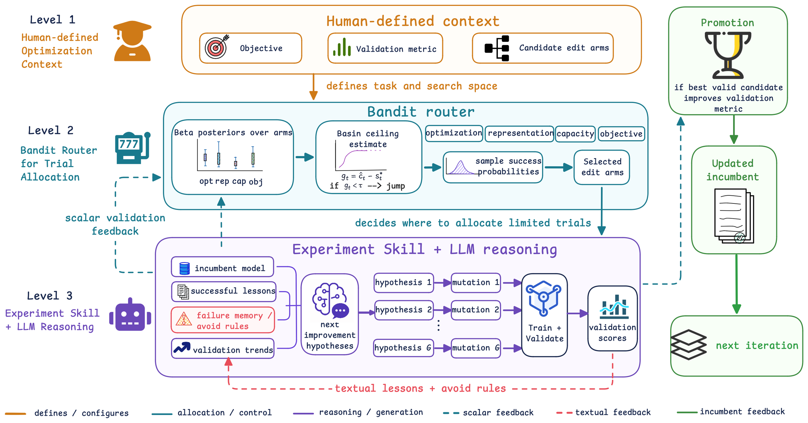

01研究背景与问题定义
推荐模型开发不是一次把代码写对，而是在有限实验预算中反复调整结构、损失与训练策略。LLM 很适合解释日志和提出补丁，但如果同时让它决定下一轮试哪个方向，搜索可能追逐看起来合理的叙事，重复低产出修改。另一方面，只做局部微调又可能停在当前结构的局部最优。
RecHarness 将预算路由与具体假设生成拆开：人类规定目标、验证指标和候选修改臂，Bandit 根据实际验证反馈分配下一轮机会，LLM 再在选中方向内改代码。停滞时开放结构跳转，并允许跳转候选先局部重调，避免用暂时不适配的分数过早否决新结构。
| 控制者 | 决定什么 | 不负责什么 |
|---|---|---|
| 人工定义 | 目标、验证协议与候选臂 | 不逐次手工选择补丁 |
| Bandit router | 在允许的方向间分配试验 | 不直接生成代码或解释日志 |
| LLM + Experiment Skill | 选定方向内的假设与实现 | 不能替代 Bandit 对所有臂任意排序 |
02方法与技术路线
搜索以当前最佳可验证实现为 incumbent。每轮只为选中的若干方向付出生成、执行、训练与验证成本，之后分别更新路由统计、经验文本与最佳实现。
Thompson Router
各臂维护 Beta 成功统计；采样后选若干方向，而非让 LLM 任意决定研究顺序。
LLM 假设与代码变异
在规定方向内产生可执行候选，实际训练并验证；无效程序不得晋升。
统计反馈
组内优于平均且不低于 incumbent 的有效普通试验计成功，更新对应臂后验。
状态反馈
更优实现晋升；成功经验与失败规避规则写入 Experiment Skill。
Bandit 选择的是修改语义，不是精确超参数
臂可以是学习率调度、正则、嵌入维度、池化、特征或损失等方向。每轮从各 Beta 后验采样，选取较高样本对应的臂，兼顾历史收益与不确定性；LLM 收到方向后才决定具体方案。
普通试验成功需要程序有效、相对同组平均改善为正，且分数不低于历史 incumbent。这个二元统计用于未来预算分配，晋升条件则看是否真正超过最佳实现。两种判定作用不同，不能把 Bandit 成功直接当成最终模型提升。
Experiment Skill 怎样承载比标量更多的反馈
经验文档记录最佳实现、近期成功修改、无效或有害方向、失败原因与验证趋势。成功试验形成可重用经验，失败试验形成避免重复的规则；每轮验证后自动刷新。
文本经验不决定臂的排序，它影响选中方向内如何形成下一次假设。这个分工让标量适合的预算调度与语言适合的错误解释各自承担职责，避免一份长反思既作事实库、又作路由器、又作补丁生成器。
Jump 为什么不能用第一次分数立即判死刑
局部改善率按最近 W 轮 incumbent 增量计算；低于阈值只意味着 jump 臂变得可选，并不强制马上跳转。结构变更后，原学习率和正则未必合适，所以跳转分支允许 R 轮局部重调，再看最好结果是否超过跳转前 incumbent 加指定幅度。
这相当于给新结构一段适应预算，避免局部搜索的短视。但也增加了失败跳转的成本，且重调预算和验收幅度决定探索倾向。臂收益随 incumbent 变化，不是标准静态老虎机；后验更适合被理解为局部试验经验，而非全局固定成功概率。
论文原始结构图 · 点击对照

03实验设计与结果分析
效果是否由起点决定
| 任务 / 模型 / 指标 | Base → RecHarness |
|---|---|
| Amazon Movies / GRU4Rec / H@10 | 0.2317 → 0.5179 |
| Amazon Movies / SASRec / H@10 | 0.5335 → 0.5923 |
| KuaiRec / D2Q / WT-XAUC | 0.5310 → 0.5947 |
| KuaiRec / GR / WT-XAUC | 0.6161 → 0.6176 |
较弱起点改善很大，强起点收益显著缩小，说明自动化搜索首先能修复实现与训练配置不足，不能把大增幅直接解释为发明了新推荐架构。Amazon 每个测试候选集合包含一个正例和 99 个采样负例；其 H@10 不是全物品库召回表现，KuaiRec 的 WT-XAUC 也不能与其混算平均收益。
离线改进有没有转化为线上价值
| 指标 | 变化 |
|---|---|
| ADVV | +2.084% |
| Revenue | +0.534% |
| Exposure | +0.559% |
线上测试提供了超出离线负例采样的业务证据，但验证的是最终选出的候选，不单独证明 Bandit 路由、技能文本和 jump 各自的线上贡献。三项是不同指标的相对变化，不是百分点，也不应把它们相加为总收益。搜索耗费的训练与验证预算仍需与长期上线收益分开计算。
04贡献、局限与综合评价
贡献是清晰划分搜索中不同类型的判断
RecHarness 将“哪里值得继续花一次实验”与“这个方向应该怎样修改”分开，使随机探索、实际验证与语言解释形成可检查的闭环。延迟验收新结构也承认优化器与架构存在适配关系，比只看单次即时验证分更合理。
验证集是搜索反馈，也是潜在的适配目标
所有方向通过同一验证指标竞争，试验越多，偶然较高的候选越容易成为 incumbent。更稳定的 Bandit 路由可以减少无效方向，但并不自动防止对验证样本和负例采样适配。线上结果缓解了最终候选缺乏外部价值的疑虑，却只覆盖一个实际部署场景。若想判断收益是否可复用，应冻结搜索过程后在独立时间窗口、不同负例和更强人工调优起点复核；只有这些条件都保持增量，才更支持可迁移的优化方法，而非验证协议内的高效搜索。
后验统计面对不断变化的代码状态
每次晋升都改变后续试验的背景：一个臂在旧结构上有效，不意味着在新结构上仍有效。论文没有假设固定成功概率，这一点很重要；但 Beta 累计统计仍可能对早期成功形成惯性，影响结构跳转后资源分配。
应固定候选生成器与总训练时间，比较累计统计、滑动窗口或跳转后重置，并检查不同阶段的试验成功率和最佳留出分。如果刷新统计特别有效，收益说明在于非平稳调度；若原方法已稳定，则支持其简单路由足以近似实际工程过程。现有多任务与线上结果证明自动迭代可创造价值，对不同搜索空间与强起点的收益边界仍应由预算匹配实验决定。